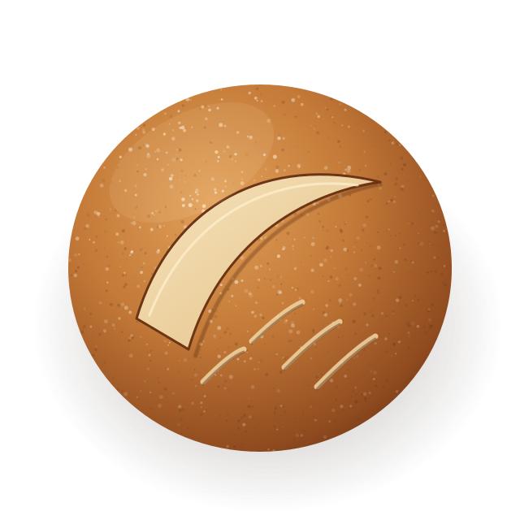

Ekşi maya,
otuz altı saat
sabır.
Tuz & Maya'nın sitesinde, sağ altta bir soru asistanı var. Saat, sipariş, alerjen, adres: işletmenin onayladığı cevapları verir, yanlış yazsanız da anlar, bilmediğinde uydurmaz.

Şunları deneyin
Düğmeler soruyu asistana gönderir. Kendi sorunuzu da yazın: hatalı yazımı, kısaltmayı, aksansız Türkçeyi tolere eder; listede olmayan konuda cevap uydurmaz.
Tezgâhta neler var
Asistanın "ekmek ne zaman çıkıyor" ya da "fiyat" sorularında gösterdiği liste. Rakamlar ve ürünler örnektir.
Fiyatlar örnektir, gerçek bir işletmeye ait değildir.
Yapay zekâ değil,
işletmenin kendi cevapları.
İşletme cevapları yazar
Sık sorulan 18 soru ve cevabı işletmenin kendisi onaylar. Asistan bunların dışında tek kelime söylemez; fiyat, sağlık ya da yasal konuda kendi kendine yorum yapmaz.
Soru, tarayıcıda eşleşir
Sunucu, hesap ya da anahtar yok. Soru sadeleştirilir, yazım hatası ve kısaltmalar (zmn, nrde) tolere edilir; en yakın onaylı cevap seçilir.
Emin değilse yönlendirir
Eşleşme zayıfsa "şunu mu demek istediniz?" diye sorar; hiç yoksa soruyu hazır yazılı olarak işletmenin WhatsApp'ına taşır. Yanlış cevap vermektense bilmediğini söyler.
Daha akıcı konuşan sürüm da kurulabilir
Bu demo
- Hazır, onaylı cevaplar
- Sunucu ve anahtar yok
- Aylık kullanım maliyeti yok
- Her cevap öngörülebilir
Yapay zekâlı
- Soruyu kendi cümleleriyle yanıtlar
- Sunucu vekili ister
- Kullanıma göre maliyet doğar
- Yalnız onaylı metinden cevap verir
Sağdaki video bu sürümün nasıl kurgulanacağını gösterir; canlı demoda yapay zekâ yoktur. Anahtar tarayıcıya hiç gitmez, kullanım sınırlıdır ve sağlık gibi hassas sorular yine WhatsApp'a gider.
Asistanın bildiği her şey bu kadar
Aynı liste sayfada da durur: asistanı açmak istemeyen ya da JavaScript'i kapalı olan ziyaretçi de cevabı bulur.